장르와 수익 구조
이 영상은 첫 게임을 스팀으로 낼지 모바일로 낼지 고민한 인디 개발팀의 결론이에요. 답은 먼저 나와요. 이 팀한테는 스팀이 더 나았대요. 그리고 그 이유를 네 가지로 나눠 숫자로 보여 줘요.
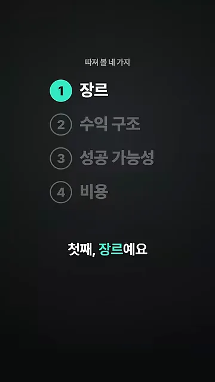
첫째, 장르마다 맞는 플랫폼이 달라요
미국 앱스토어 매출 100위 안에서는 절반이 퍼즐이나 캐주얼 게임이에요. 그런데 스팀에서는 사정이 달라요. 아래 그래프는 리뷰가 1,000개 넘게 쌓인 게임의 비율을 평균(1.0배)과 비교한 거예요. 캐주얼은 0.51배, 퍼즐은 0.46배로 점선 왼쪽에 머물러요. 맨 아래 협동만 3.8배로 길게 뻗어 있어요.
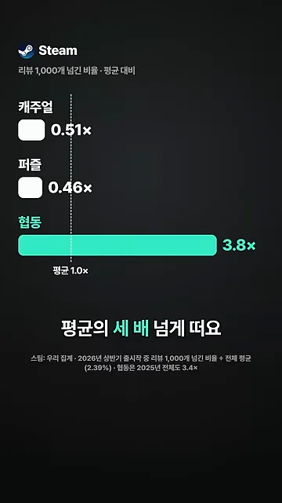
둘째, 유료로 팔 수 있나요
스팀에서는 보통 게임을 팔아서 벌어요. 모바일은 사정이 반대예요. 아래 원 그래프처럼 모바일 게임 다운로드의 96%가 무료 게임이에요. 유료 게임으로 돈을 벌기가 생각보다 어려운 이유예요.
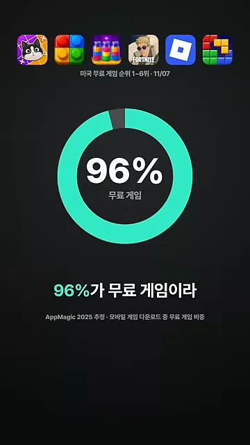
그래도 유료로 뜬 작은 게임은 있어요. 아래는 애플의 2025년 미국 유료 게임 연간 목록이에요. 마인크래프트 바로 아래, 초록색으로 칠한 두 번째 줄이 혼자 만든 발라트로(Balatro)예요. 스팀에서 먼저 뜬 뒤 모바일로 넘어온 게임이고, 유료 1위를 하던 첫 주에 100만 달러쯤 번 걸로 추정돼요.
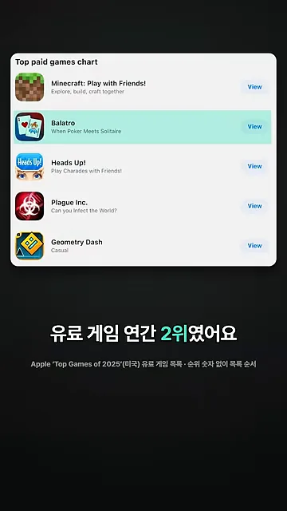
발라트로는 예외에 가까워요. 모바일 유료 게임 상위 100개가 1년에 버는 돈의 중위값은 70만 달러 정도였어요. 화면 위 아이콘 열 개는 오늘 미국 유료 순위 1~10위를 예로 보여 준 거고, 70만 달러는 2022년 순매출 기준이에요.
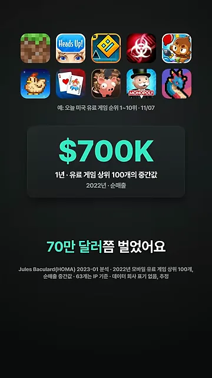
게다가 그 상위 100개 중 63개는 PC(Personal Computer)나 콘솔, 보드게임에서 넘어온 게임이에요. 아래 격자에서 초록 칸 63개가 그런 게임이고, 회색 37칸만 모바일에서 처음 나온 게임이에요. 이미 다른 곳에서 이름을 알린 게임이 모바일 유료 시장을 차지하고 있다는 뜻이에요.
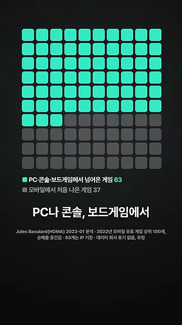
무료 게임의 광고 수익은 얼마나 될까요
무료 게임은 게임 속 광고로 벌어요. 광고를 1,000번 보여 주면 5달러쯤 들어와요. 문제는 사람이 금방 떠난다는 거예요. 아래 그림은 다운받은 100명을 사람 모양으로 그렸어요. 하루 뒤엔 22명, 일주일 뒤엔 초록으로 남은 4명뿐이에요.
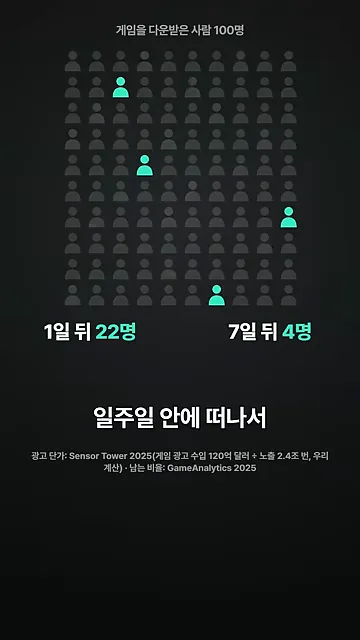
팀은 이 숫자들을 곱해서 직접 계산해 봤어요. 화면 가운데 작은 글씨가 계산식이에요. 노출 1,000번당 5달러에 남는 사람 수를 곱하고, 한 사람이 하루 4~6번 광고를 본다고 가정했어요. 그러면 10만 다운로드 게임이 90일 동안 버는 돈이 5,000~1만 달러 정도로 나와요.
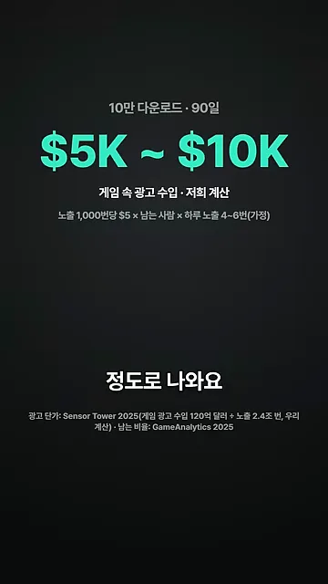
성공 가능성: 큰 시장, 더 많은 경쟁
셋째는 성공 가능성이에요. 시장 크기만 보면 모바일이 압도적이에요. 아래 막대에서 스팀 유료 게임 판매는 120억 달러($12B), 모바일 앱 안 결제는 820억 달러($82B)예요. 모바일이 일곱 배쯤 커요.
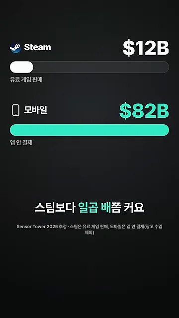
대신 경쟁작도 훨씬 많아요. 아래 점 하나가 신작 1,000개예요. 스팀 흰 점은 두 줄(약 2만 개)인데, 모바일 초록 점은 화면을 채울 만큼(약 19만 개) 많아요.
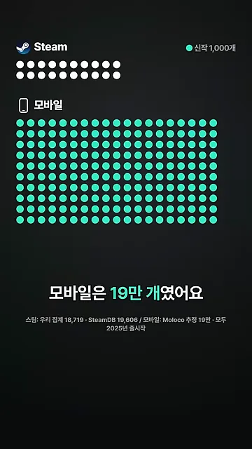
그래서 크게 성공할 확률은 오히려 스팀이 높아요. 출시한 해에 100만 달러 넘게 번 신작을 세어 보면 스팀은 100개 중 1~2개(1.5%)예요. 모바일은 1,000칸 격자에 초록 점이 세 개뿐인 0.3%예요.
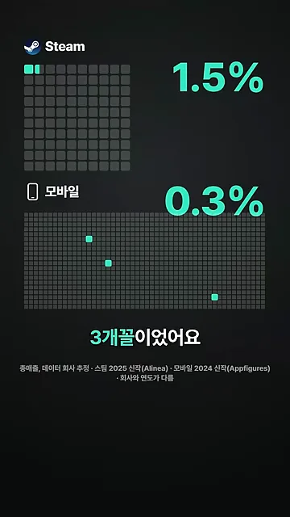
그렇다고 스팀이 쉬운 건 아니에요. 2025년 스팀 신작을 번 돈 순서로 세우면 한가운데 오는 중위값이 318달러예요. 영상은 '320달러쯤'이라고 말해요. 아래 그래프에서 초록 막대가 그 한가운데 게임이에요. 점선 오른쪽 흰 막대들이 5,000달러를 넘긴 게임인데, 23.4%라 넷 중 하나도 안 돼요.
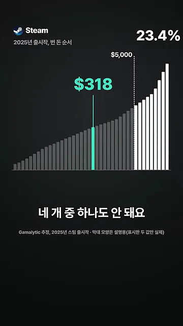
모바일은 이런 중위값 자료를 팀이 찾지 못했대요. 대신 쏠림을 보여 주는 숫자를 가져왔어요. 아래 왼쪽 격자에서 초록 칸 하나가 상위 1% 회사예요. 오른쪽 막대처럼 이 1%가 앱 안 결제 매출의 92.5%를 가져가요.
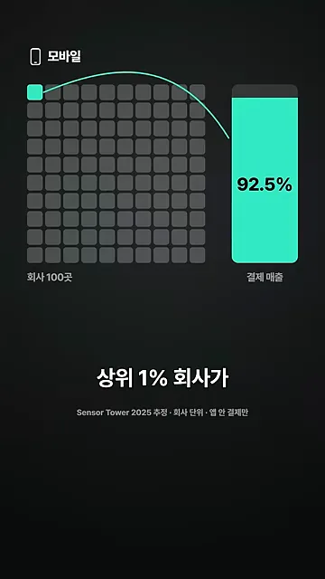
비용과 결론
넷째는 비용이에요. 모바일은 출시만 해서는 사람이 잘 모이지 않아요. 아래 위쪽 막대처럼 아이폰 게임 설치의 44%가 광고로 데려온 설치예요. 아래쪽 두 막대는 광고비 1달러를 썼을 때 캐주얼 게임이 30일 뒤 돌려받은 돈이에요. 초록 막대가 점선(절반)까지 가지 못해요.
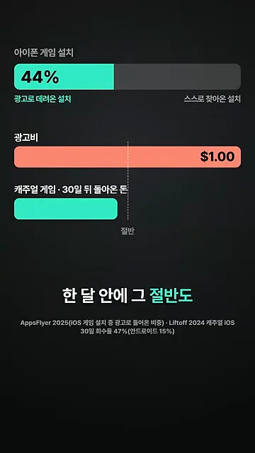
등록비
스토어에 게임을 올리는 등록비도 플랫폼마다 달라요. 스팀은 게임 하나에 100달러예요. 아래 Steamworks 안내문에서 초록으로 칠한 부분이 '게임마다 100달러'와 '조정 총매출 1,000달러를 넘기면 돌려받는다'는 문장이에요.
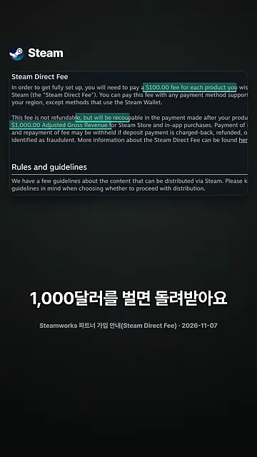
애플은 매년 99달러를 내야 해요. 아이폰용 빌드는 맥이 있어야 만들 수 있어요. 영상은 이 대목에서 Godot 엔진 문서의 'macOS와 Xcode가 설치된 컴퓨터에서 내보내야 한다'는 문장을 보여 줘요. 안드로이드는 구글 플레이에 25달러를 한 번만 내면 돼요. 아래 Play Console 도움말에서 초록으로 칠한 'US$25 one-time registration fee'가 그 문장이에요.
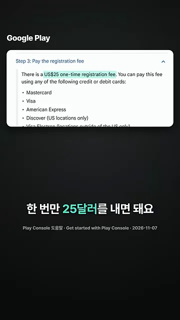
네 가지를 한눈에
영상이 마지막에 내리는 결론은 이거예요. 어디에 낼지는 내가 만들려는 게임이 어떤 게임인지에 달려 있어요. 앞의 네 가지를 영상 숫자 그대로 한 표에 모으면 이래요.
| 따져 볼 것 | 스팀 | 모바일 |
|---|---|---|
| 장르 | 협동 게임이 평균의 3.8배 뜸. 캐주얼·퍼즐은 절반 | 매출 100위의 절반이 퍼즐·캐주얼 |
| 수익 구조 | 게임을 팔아서 벌어요 | 다운로드 96%가 무료. 광고 수익은 10만 다운로드에 석 달 5,000~1만 달러 |
| 시장과 신작 수 | 120억 달러, 신작 2만 개 | 820억 달러, 신작 19만 개 |
| 100만 달러 넘긴 신작 | 1.5% (중위값 318달러) | 0.3% (상위 1% 회사가 결제 매출 92.5%) |
| 사람 모으기 | 영상에서 따로 다루지 않음 | 아이폰 설치 44%가 광고. 캐주얼은 30일에 광고비 절반도 회수 못 함 |
| 등록비 | 게임당 100달러, 1,000달러 벌면 환급 | 애플 연 99달러(맥 필요), 구글 한 번 25달러 |